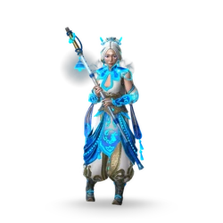

Юньлинь

Редкость: Rare
Пол: Female
Фракция: Dynasty
Энергия: Shadow
Класс: Normal
Добыча: Rift Roulette and Chests
| Название | Редкость | Изображение |
|---|---|---|
| Лунный Посланник | Обычный | |
| Тайна Туманов | Редкий | |
| Жертвенная невеста | Эпический | |
| Благоприятная Карма | Сезонный | |
| Безупречный музыкант | Сезонный |  |
| Название | Редкость | Изображение |
|---|---|---|
| Флейта-посох | Обычный | |
| Манящая колыбельная | Обычный |  |
| Молитва об освобождении | Обычный | |
| Трофейная флейта-посох | Обычный | |
| Чистые дела | Обычный | |
| Таинственная мелодия | Редкий | |
| Жнец Апатии | Редкий | |
| Чарующий звук | Редкий | |
| Аккорд Далёких Миров | Редкий | |
| Лунная нефритовая ария | Эпический |
| Название | Описание | Изображение |
|---|---|---|
| Целебная Мелодия | Юньлин получает новую Мелодию Флейты. Эта Теневая Способность исцеляет ее при использовании. | |
| Мелодия восполнения | Юньлин получает новую Мелодию Флейты. Эта Теневая Способность притягивает теневую энергию противника при использовании. | |
| Лунная соната | Эффекты мелодий флейты были улучшены: увеличены длительность оглушения, количество поглощаемой энергии исцеления и тени. |  |
| Отголоски сумерек | Успешное исполнение мелодий флейты дает Юньлинь заряды эха, которые увеличивают ее урон. | |
| Очарование Духов | Юньлин получает новый Charm Chime. Эта способность Тени делает ее на мгновение бестелесной. | |
| Очарование туманов | Юньлин получает новый Charm Chime. Эта способность Тени делает ее временно невидимой. | |
| Лицом к лицу со страхом | Успешное использование Charm Chimes временно заряжает посох Юньлиня - следующая атака нанесет больше урона и пробьет блок противника. Успешная атака противника сбрасывает этот эффект. |  |
| Палящий лунный луч | Колокольчики-чары оставляют на месте Юньлиня лунный луч, который поджигает противника. | |
| Стрела Хоу И | Юньлинь использует дистанционную атаку — выстрел из лука стрелой, которая сбивает противника с ног при ударе. | |
| Кролик Чанъэ | Каждая Теневая Способность поглощает лишь четверть теневой энергии Юньлиня. | |
| Судьба Сопротивления | Герои в вашей команде имеют повышенную защиту от теневых способностей и их альтернатив. |  |
| Судьба Веры | Все эффекты исцеления восстанавливают больше здоровья героям в вашей команде. |